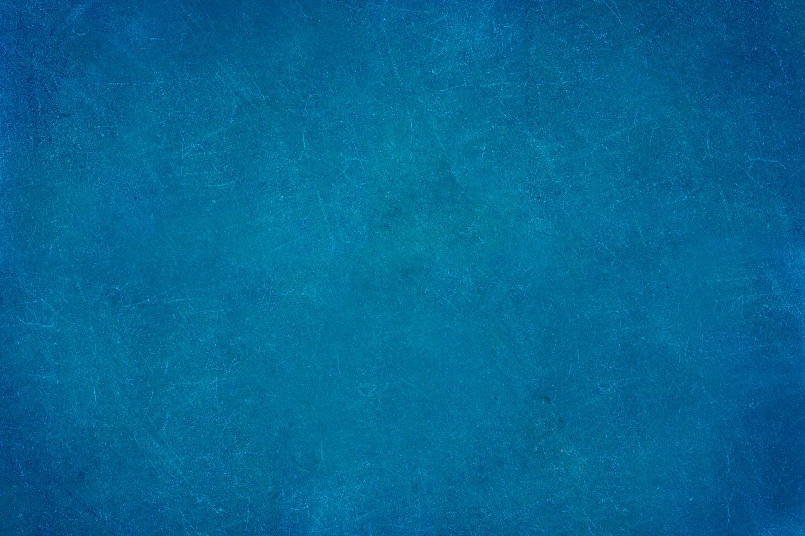
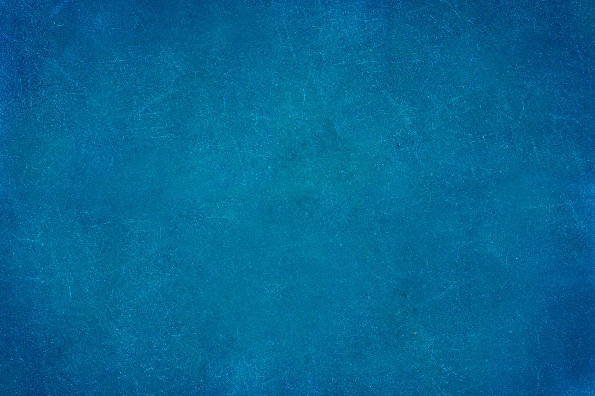

"Not all who wander are lost"
-Tolkin
Hi I am student at Coder academy,
on my way to become developer
Learn More
Latest:
Ruby Work
This is a bit code I have wrote at CA in the first week of learning ruby.
This helped me around loops, boleans, saving constants and creating a program that reacts to user input.
At the end this code named after my brother was used by his amusement.

Css Work
This was the first Css Assigment, in Zen Garden project you use pre build html and mix it with creative
CV
Greetings this is Faik Sinan Canselen and this is my CV :
My educational career as fallows;
I graduated from American Collage Institution in Turkey with Degree of literature and maths.
Afterwards I was except to Istanbul Bilgi University Bachelors Degree of Marketing.
At the 4th and last year of University I froze my Account to enrol in Coder Academy Boot Camp to become some where close to being an Junior Developer and to fallow my passion of becoming IT personal. And I am on a road to become one .
My business career as fallows;
While in university I worked at my parents company Matdigital for 3 years.
I did as fallows accountant assistant, marketing management assistant, IT personal and assistant and as production manager.
At meantime I worked in mental care and services company called Mind and More as metal adviser for people who struggle with certain difficulties, I mostly specialised on Dyslexia. I also worked on charity project there which focus on mental care and progressive learning of government middle schools.
My sports career as fallows;
I played professional basketball from early age of 6 till I turned 15, the last 2 teams which I played in was top 5 of Turkish League. At BJK team and collage team I played in finals of Turkish League and at BJK we became the Champions of twice in row.
In collage I dropped play basketball as I explored wind surfing and fell in love with.
I have been competing at wind surf races both globally and locally for over 5 years now. I have been in the top 10 in Turkish League for over 4 years now.
As my other hobby I was the captain of cross team of ACI for 3 years and run in any race that was below 5 km.
2 years ago I started rock climbing and competed.
Today I still competing in wind surfing and running.